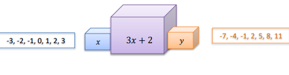

Funções
Definição de funções
Função é a relação entre duas grandezas, que chamamos de variáveis, que pode ser
representada por F(x)=ax+b ou Y=ax+b. Também usa-seas variáveis dependentes e independentes.
Exemplo: O preço do estacionamento de um automóvel é cobrado da
seguinte maneira: uma taxa fixa de R$ 5,00 pela entrada mais R$ 3,00 por hora
de permanência. O preço pago pelo motorista que utiliza desse serviço,
depende do número de horas de permanência.
A variável independente é a taxa fixa é o valor da entrada - R$5,00 - que será pago de
qualquer maneira, a variável independente é os R$3,00, já que este depende da quantiedade de
horas que o carro ficará no estacionamento. Caso o carro permaneça por 4 horas a equação
será a seguinte:
f(x) = 4
a = 3
b= 5
f(2)= 3*4+5 = R$17,00
|
Máquina de Funções
Podemos fazer a ligação de uma máquina de funções à um transformador de energia, que por exemplo recebe 220V
e transforma em 110v, a máquina de funções faz o mesmo preocesso, porém com números, assim montando um
conjunto de entrada X e o transformando em um conjunto Y que corresponde ao valor de saída, ou também
chamado de resultado

Imagem retirada do arquivo da professora.
|